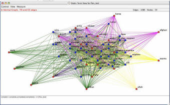

L’organizzazione a rete è il modello ideale a cui le imprese, secondo
la letteratura più autorevole, dovrebbero tendere. La comunicazione e la
gestione della conoscenza i fattori chiave di successo di queste nuove forme
di impresa. Carlo Mazzucchelli, fondatore di ComplexLab, ci spiega quali
strumenti possono essere usati per trasformare flussi comunicazionali e
relazionali tra persone, gruppi, organizzazioni, computer o altri agenti di
conoscenza in asset aziendali.
di
Nicolò Occhipinti
La trasformazione è già in atto: le imprese si stanno strutturando sempre
più come un network di relazioni tra individui caratterizzati da obiettivi e
valori condivisi. È proprio questa la chiave della sopravvivenza delle
imprese nel futuro dell’economia della conoscenza.
Nel mondo attuale i network sono tantissimi e proprio il pensare al network
come una forma evoluta di organizzazione sta rivoluzionando il concetto
stesso di management.
Questo trend è osservabile anche in numerosi altri contesti. Su internet
la rivoluzione in atto si chiama Web 2.0, una transizione del World Wide Web
da semplice collezione di siti web a insieme di servizi e applicazioni per
la condivisione delle conoscenze, per la collaborazione, lo scambio di idee
e di professionalità. Si parla sempre più di “Reti Sociali”, in inglese
Social Networks, che sul web prendono la forma di servizi offerti da
numerosi siti web per la costruzione di “link”, di relazioni tra gli utenti
registrati.
Per studiare queste strutture organizzative sono stati sviluppati diversi
strumenti di analisi. Eccellere ha intervistato Carlo Mazzucchelli,
consulente in scienze della comunicazione, marketing e management e
fondatore di Complexlab
(www.complexlab.com) per capire come questi strumenti possono essere
efficacemente utilizzati in ambito aziendale.
L'interesse per il fenomeno delle reti sociali è fortemente cresciuto
negli ultimi anni, anche a causa della loro recente diffusione su internet.
Ma cosa si intende esattamente per rete sociale?
|
Carlo Mazzucchelli
Co-Fondatore di Complexlab |
Wikipedia definisce una rete sociale un qualsiasi gruppo di persone
connesse tra loro da diversi legami sociali, che vanno dalla conoscenza
casuale ai vincoli familiari. Le reti
sociali sono spesso usate come base di studi interculturali in
sociologia e in antropologia. Il termine è diventato molto di moda ed ha
assunto significati diversi grazie all’esplodere del fenomeno del social
networking in rete reso possibile da siti e portali quali
Linkedin,
Ecademy,
Openbc e molti altre
applicazioni simili che hanno semplicemente implementato algoritmi (sei
gradi di separazione, piccoli mondi, gradi di betweenness, prossimità,
densità ecc.) utili a rendere possibile e facilitare l’incontro tra persone
in rete e la loro collaborazione.
Il punto di partenza è la scoperta che realtà tra loro molto diverse quali
la natura, la società, l’economia, la comunicazione, Internet, la catena
alimentare, la crescita metropolitana, il fenomeno dell’immigrazione, ecc.
sembrano funzionare allo stesso modo e possono quindi essere indagate ed
interpretate per trovare soluzioni a problemi fino ad oggi poco compresi.
L’elemento comune viene trovato in una struttura organizzativa reticolare
costantemente dinamica, in grado di trasformarsi, crescere, disgregarsi ed
evolvere con modalità e potenzialità di applicazione non ancora
completamente individuate.
Intende dire che fenomeni così complessi possono essere analizzati
mediante poche formule che ne descrivono la struttura organizzativa?
Proprio così. Alla base di questa struttura organizzativa, secondo le
teorie di numerosi ricercatori tra i quali Eulero, Erdos, Granovetter,
Barabasi che da anni stanno studiando le reti, ci sono delle semplici leggi
matematiche che possono essere descritte e quantificate permettendo di
individuare l’esistenza di proprietà tra loro simili in grado di spiegare le
relazioni che si determinano nella rete e in che modo essa si sviluppa e
vive.
In questo contesto Internet con la sua ‘rete delle reti’ che abbraccia ormai
il mondo intero, è diventato paradigmatico per comprendere meglio e
disegnare le mappe reticolari e il tracciato delle interconnessioni che
interessano realtà diverse quali il DNA, i sistemi cellulari e quelli
neurali, ma anche le interazioni esistenti tra aziende in un distretto
industriale, i mercati finanziari e fenomeni quali le epidemie e gli
uragani, il terrorismo di Al Qaeda e il movimento new global.
Quali sono le principali applicazioni degli studi sulle reti sociali
in ambito professionale e nel business? Può descrivere qualche esempio
concreto?
I concetti della teoria delle reti e la conoscenza delle leggi
matematiche che sembrano governare lo sviluppo di ambienti a struttura
reticolare, hanno caratterizzato negli ultimi anni un nuovo e potenzialmente
ricco mercato, quello del social networking online inteso come spazio
comunitario in rete, nel quale costruire e gestire percorsi relazionali con
persone vicine e lontane, conosciute o sconosciute, per motivi personali e/o
professionali ed infine per realizzare obiettivi di business. Società come
Ryze, Linkedin, Myspace, Tribe hanno costruito dei progetti di reti sociali
online benchè nessun modello di business vincente sia fin qui emerso.
Più interessante è invece l’applicazione degli strumenti legati alle teorie
delle reti, al social networking ed all’analisi delle reti sociali, in
ambito aziendale e scientifico. Una prima applicazione concreta dello
sviluppo teorico e di ricerca avvenuto in questi anni è rappresentata da
strumenti software che permettono di analizzare reti sociali da un punto di
vista individuale, da quello di una organizzazione. Questi strumenti possono
essere utilizzati anche per analizzare reti sociali composte da agenti
software creati per simulare il comportamento di una rete di sistemi
adattativi complessi quali potrebbero essere ad esempio i Distretti
Industriali.
L’ambito di applicazione all’interno di una organizzazione è quello del
Knowledge Management, delle comunità di pratica, delle intranet e dei
portali, delle comunità online e di tutti quei contesti ad elevato carattere
collaborativo per i quali l’efficacia – tasso di innovazione, produttività,
creatività e soddisfazione del dipendente – è una variabile dipendente della
forza delle relazioni esistenti. Queste relazioni rappresentano una
componente del cosiddetto capitale sociale di una organizzazione e
sono diventate importanti per determinare il successo o l’insuccesso della
stessa. Si tratta di un capitale non facile da interpretare perché
determinato da elementi intangibili, fluidi e volatili quali: la
condivisione di visioni e di obiettivi, la condivisione dei valori, la
fiducia, il rispetto reciproco, l’amicizia, il supporto del gruppo, la
partecipazione, l’ empowerment, il network, la cooperazione e la
collaborazione, il lavoro di squadra, il cameratismo, la comunicazione, il
conflitto funzionale, le negoziazioni e molto altro.
Quindi, gli strumenti di analisi delle reti sociali possono essere
utili anche per progetti di knowledge management volti alla creazione,
condivisione e utilizzo del capitale intellettuale di una organizzazione...
Certamente. In questo ambito questi strumenti permettono di approcciare
problemi concreti quali: la gestione di progetti distribuiti che coinvolgono
un numero elevato di persone, l’individuazione di persone con competenze ed
esperienze vitali per il futuro dell’azienda per trattenerle con programmi
ed incentivi ad hoc, l’aumento della capacità innovativa, della produttività
e della responsbailità individuale e di gruppo riducendo il gap di
conoscenza esistente tra le persone e riducendo il tempo necessario alle
persone per individuare le conoscenze a loro necessarie.
Questo tipo di interventi può essere fatto one-time o programmato
all’interno di una strategia aziendale coerente con un approccio di tipo
adattativo che tiene conto dell’estrema volatilità e dinamicità dei dati
presi in esame. Se compreso nella sua potenzialità è un intervento con
elevato ritorno sugli investimenti perché in grado di fornire informazioni
utili alla comprensione di fenomeni complessi e difficili da descrivere
diversamente.

Una mappa che visualizza le relazioni esistenti tra le persone che
operano all'interno di una organizzazione aziendale. La mappa è
stata costruita a partire dalle mailbox delle persone delle quali è
stata letta l'intestazione ( destinatario, mittenti, oggetto della
email).
Fonte: iQuest Analytics/ComplexLab |
Quali strumenti esistono per analizzare le reti sociali?
Il mercato offre oggi una vasta gamma di soluzioni e prodotti per
l’analisi delle reti sociali (Social Network Analysis, SNA). L’idea di base
di queste soluzioni fa riferimento alle teorie della complessità e alla
teoria delle reti che hanno focalizzato sempre più l’attenzione sugli
aspetti biologici e sociali delle realtà aziendali, delle attività
economiche e in genere delle organizzazioni sociali. Il valore non viene più
collocato nelle sterili banche dati dei computer ma nell’intelligenza che
caratterizza la vita sociale e relazionale dell’organizzazione. Nella
realizzazione di una rete di computer in grado di sostenere lo sviluppo del
business aziendale, l’attenzione si sposta dalle macchine alle persone e al
loro modo fluido, elastico e non prevedibile di relazionarsi e collaborare
tra loro.
Uno dei primi strumenti messi a dispozione del mercato e oggi forse lo
strumento più conosciuto è UCINET (Analytictech) Web site un
programma scaricabile dalla rete, nato con l'obiettivo di facilitare
l'analisi delle reti sociali e oggi utilizzato da moltissime realtà in giro
per il mondo. Il secondo strumento da menzionare è InFlow di Valdis
Krebs. Si tratta di un un software per l’analisi delle reti sociali, usato
tra gli altri da Ibm, Lucent, Shell, Ernst&Young, PricewaterhouseCoopers e
Kpmg.
Un’altra soluzion molto interessante è IQUEST di proprietà della
iQuest Analytics, Inc. e che è distribuito in Italia da Complexlab.
Il prodotto permette di analizzare, misurare, ottimizzare e quindi
visualizzare le relazioni nascoste esistenti tra elementi diversi di una
rete attraverso il mining di dati non strutturati reperibili sul web, nei
log della posta elettronica, negli archivi vocali delle telefonate, nelle
intranet ecc. L’applicazione può essere assimilata ad un cruscotto aziendale
con numerose funzionalità utili ad estrarre utili informazioni da dati non
strutturati in tempo reale.
Un altro prodotto che merita di essere menzionato è Netminer. La
soluzione ha integrato gli standard disponibili e le più recenti metodologie
di SNA con le più moderne tecniche per la rappresentazione grafica dei
risultati.
Per un elenco completo di strumenti software oggi disponibili suggerisco di
visitare il sito web della
ISNA (International Network for Social Network Analysis) e
Complexlab, il
portale italiano della complessità .
Quali vantaggi possono trarre le aziende attraverso l'uso di tali
strumenti?
Gli strumenti di analisi delle reti sociali sono oggi utilizzati con
efficacia per mappare e misurare reti sociali, comunità di persone,
organizzazioni attraverso l'analisi dei flussi di conoscenze e di
informazione tra i nodi che compongono la rete e delle loro relazioni.
L'analisi viene applicata alle reti sociali nel loro essere sistemi umani
adattativi complessi. Complexlab, ad esempio, propone il TAO
(Tomografia Assiale dell'Organizzazione), uno strumento ed un metodo pratico
per investigare e analizzare comunità di pratica e ecosistemi dinamici della
conoscenza che caratterizzano le organizzazioni e le imprese moderne.
L'utilizzo di strumenti di analisi delle reti sociali come il TAO porta a
risultati concreti in termini di produttività personale e organizzativa,
innovazione e capacità adattativa alle sfide del futuro.
I benefici sono molteplici e specifici per ogni singola applicazione e
progetto. Ad esempio, solo per citarne alcuni, si può ottenere un
abbattimento dei costi grazie ad una migliore utilizzazione ed
ottimizzazione delle risorse disponibili. Si ha anche la possibilità di
individuare gli esperti disponibili nell’organizzazione o nelle comunità di
pratica e le loro relazioni e contatti: chi li cerca, chi si rivolge a loro
con maggiore frequenza, perché, ecc.
Inoltre, si può comprendere meglio come agiscono le organizzazioni informali
esistenti all'interno di una organizzazione, cosa accade negli spazi vuoti
dell’organigramma aziendale e quali sono i legami chiave che non dovrebbero
essere spezzati nelle fasi di riorganizzazione, downsizing o fusione.